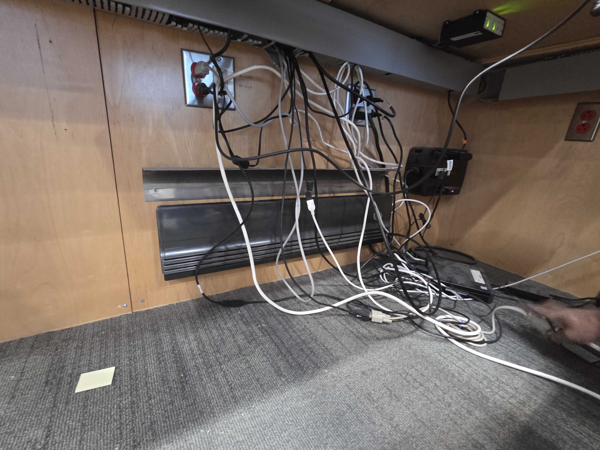
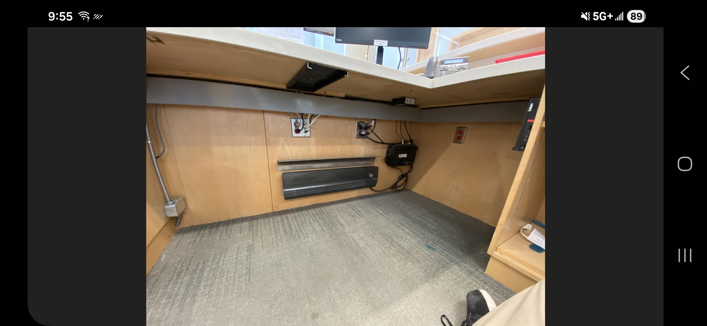
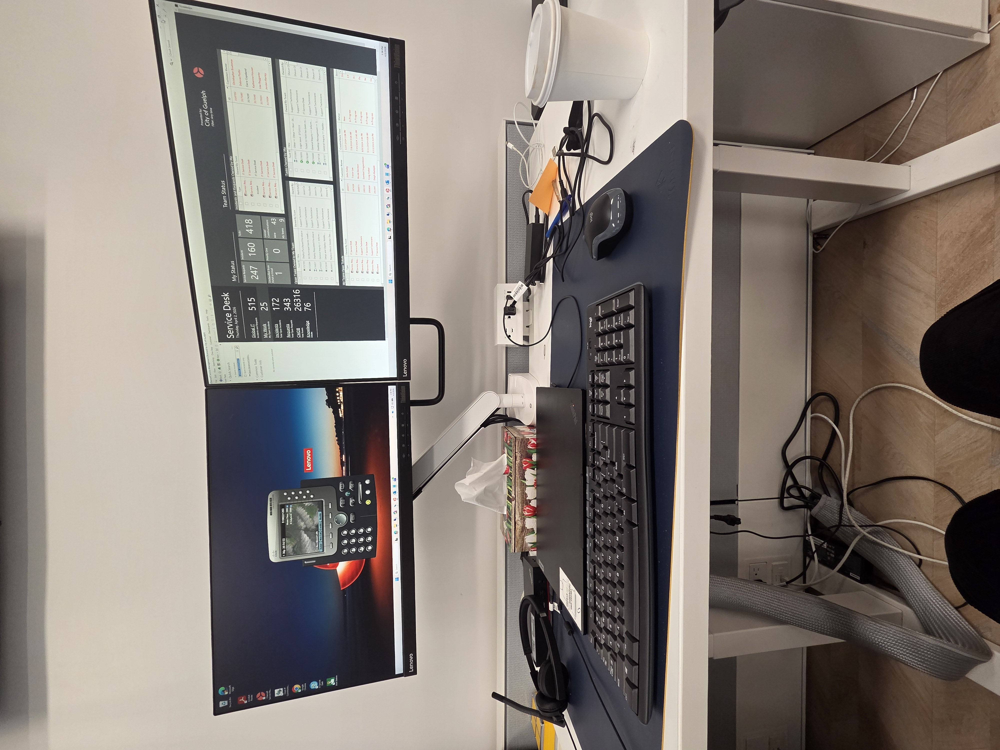

About the Employer

City of Guelph is a municipal government organization located in Guelph that provides public services to its residents. The city manages important community services such as transportation, water and wastewater systems, emergency services, parks and recreation, and digital government operations. The Information Technology department supports these services by maintaining the city’s computer systems, networks, cybersecurity, software, and technical support assistance. The IT Service Desk team acts as the first point of contact for employees who need help with hardware, software, accounts, and other technology-related issues.

The company operated on a hybrid schedule for coops with 1 week on and 1 week off. When working online we were expected to be in queue taking calls with the cisco phone system, and managing the tickets by delegating them to the right times or providing support if it was a problem that we could solve in our position such as software installs or password resets. In the office there is more work that is required on top of the calls and managing tickets which included cable organization for different workstations that required it or going to different parts of the city such as the parametric/ fire station, to help with setting up multifactor authentication to new hires.


